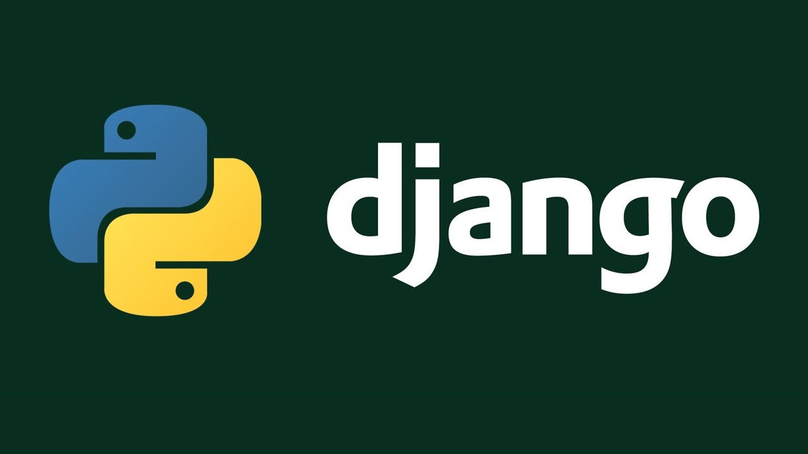

BIENVENIDO A NUESTRO BLOG DE DJANGO
Inicio Crud en Django Contacto Recursos NosotrosIntroducción a Django
Django es un software que puede utilizar para desarrollar aplicaciones web de forma rápida y eficiente. La mayoría de las aplicaciones web tienen varias funciones comunes, como la autenticación, la recuperación de información de una base de datos y la administración de cookies. Los desarrolladores tienen que codificar una funcionalidad similar en cada aplicación web que escriban. Django facilita su trabajo al agrupar las diferentes funciones en una gran colección de módulos reutilizables, llamada marco de aplicación web. Los desarrolladores utilizan el marco web de Django para organizar y escribir su código de manera más eficiente y reducir significativamente el tiempo de desarrollo web.
Video sobre que es Django
Curso de Django
Django en 5 minutos
| Contenidos Externos |
|---|
| Crear un blog con Django Link |
| Lo bueno y lo malo de Django Link |
| Tutorial de DjangoLink |
| Introducción a Django Link |
| ¿Que es Django? Link |
Ventajas y Desventajas de Django
Ventajas
- Framework muy seguro
- Compatible con otros frameworks
- Amplias herramientas de administración
- Desarrollo rápido
- Estructura lista para usar
- Reutilización de código
Desventajas
- No es compatible con algunos plugins
- Más pesado
- Curva de aprendizaje complicada
- Difícil de dominar
- Problemas de rendimiento
- Falta de nuevas funciones